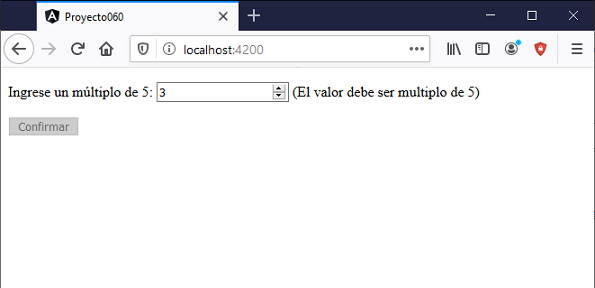

Hemos visto que Angular provee una serie de funcionalidades para validar si un email es correcto, cantidad de caracteres máximos o mínimos ingresados, patrones de cadenas ingresados etc.
Hay situaciones particulares en nuestros proyectos que no se adaptan a ninguna de esas funcionalidades, para esas situaciones podemos codificar nuestras propias funciones de validación.
Veremos los pasos a dar para crear nuestra propia función de validación.
Confeccionar un formulario que solicite el ingreso de un número múltiplo de 5. Validar que el valor ingresado sea múltiplo de 5 para que se active el botón de envío
Crearemos primero el proyecto:
ng new proyecto060
Importamos la clase 'ReactiveFormModule' modificando el archivo 'app.module.ts':
import { BrowserModule } from '@angular/platform-browser';
import { NgModule } from '@angular/core';
import { ReactiveFormsModule } from '@angular/forms';
import { AppComponent } from './app.component';
@NgModule({
declarations: [
AppComponent
],
imports: [
BrowserModule,
ReactiveFormsModule
],
providers: [],
bootstrap: [AppComponent]
})
export class AppModule { }
La función de validación se la podría definir en el mismo archivo de la componente, pero si la misma se empleará en más de un formulario, lo más conveniente es separarla en una clase independiente.
Crearemos la clase 'ValidacionesPropias':
ng generate class ValidacionesPropias
Se genera el archivo 'validaciones-propias.ts' donde debemos implementar el algoritmo de validación y también se genera el archivo 'validaciones-propias.spec.ts' para implementar pruebas unitarias.
Codificaremos ahora el método 'multiplo5' en la clase 'ValidacionesPropias':
import { AbstractControl, FormControl, ValidationErrors } from '@angular/forms';
export class ValidacionesPropias {
static multiplo5(control: AbstractControl): ValidationErrors| null {
let nro = parseInt(control.value);
if (nro % 5 == 0)
return null;
else
return { multiplo5: true }
}
}
El método debe retornar null si el dato es correcto, en nuestro caso si el valor ingresado en el 'FormControl' el resto de dividirlo por 5 genera un cero luego retornamos null, en caso contrario retornamos un tipo de dato ValidationErrors, definiendo un atributo con el nombre del método y como valor true.
Modificamos la vista de la componente que muestra el formulario reactivo y eventualmente el mensaje de error de entrada de datos (app.component.html)::
<form [formGroup]="formularioContacto" (ngSubmit)="submit()">
<p>Ingrese un múltiplo de 5:
<input type="number" formControlName="numero">
<span *ngIf="this.formularioContacto.get('numero')?.errors?.['multiplo5']">
(El valor debe ser multiplo de 5)
</span>
</p>
<button type="submit" [disabled]="formularioContacto.invalid">Confirmar</button>
</form>
La clase asociada a la vista es (app.component.ts):
import { Component } from '@angular/core';
import { FormGroup, FormControl } from '@angular/forms';
import { ValidacionesPropias } from './validaciones-propias';
@Component({
selector: 'app-root',
templateUrl: './app.component.html',
styleUrls: ['./app.component.css']
})
export class AppComponent {
formularioContacto = new FormGroup({
numero: new FormControl('', [ValidacionesPropias.multiplo5])
});
submit() {
alert('dato correcto');
}
}
Importamos la clase que acabamos de crear:
import { ValidacionesPropias } from './validaciones-propias';
Pasamos al constructor de la clase FormControl la referencia del método que se encargará de validar el dato ingresado, de forma similar a las validaciones estándares:
formularioContacto = new FormGroup({
numero: new FormControl('', [ValidacionesPropias.multiplo5])
});
En la vista mostramos el mensaje de error si existe el atributo, recordemos que si nuestra función de validación retorna null luego no existe en 'errors' el valor 'multiplo5':
<span *ngIf="this.formularioContacto.get('numero')?.errors?.['multiplo5']">
(El valor debe ser multiplo de 5)
</span>
Para que el botón del formulario permanezca desactivado mientras alguno de los datos del formulario no pase el test de validación disponemos:
<button type="submit" [disabled]="formularioContacto.invalid">Confirmar</button>
'invalid' almacena true si alguno de los controles que estamos validando no es válido.
Si ejecutamos la aplicación tenemos una interfaz similar a:
Podemos probar esta aplicación en la web aquí.